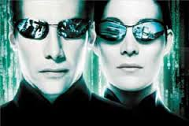
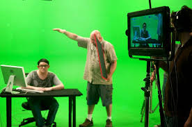

SYNOPSIS
 In the near future, Computer hacker Neo is contacted by underground freedom fighters who explain that reality as he understands it is actually a complex computer simulation called the Matrix. Created by a malevolent Artificial Intelligence, the Matrix hides the truth from humanity, allowing them to live a convincing, simulated life in 1999 while machines grow and harvest people to use as an ongoing energy source. The leader of the freedom fighters, Morpheus, believes Neo is "The One" who will lead humanity to freedom and overthrow the machines. Together with Trinity, Neo and Morpheus fight against the machine's enslavement of humanity as Neo begins to believe and accept his role as "The One".
OVERVIEW
 The Matrix was first released in the United States on March 31, 1999, and grossed over $460 million worldwide. It was generally well-received by critics, and won four Academy Awards as well as other accolades including BAFTA Awards and Saturn Awards. Reviewers praised The Matrix for its innovative visual effects, cinematography and its entertainment. The film's premise was both criticized for being derivative of earlier science fiction works, and praised for being intriguing. The action also polarized critics, some describing it as impressive, but others dismissing it as a trite distraction from an interesting premise.
CAST
- Keanu Reeves as Thomas A. Anderson / Neo
- Laurence Fishburne as Morpheus
- Carrie-Anne Moss as Trinity
- Hugo Weaving as Agent Smith
- Joe Pantoliano as Cypher
- Gloria Foster as The Oracle
- Marcus Chong as Tank
- Paul Goddard as Agent Brown
- Robert Taylor as Agent Jones
- Julian Arahanga as Apoc
- Belinda McClory as Switch
- Anthony Ray Parker as Dozer
- Matt Doran as Mouse